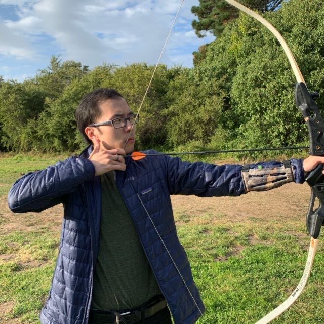

Data Scientist and ML Research at the South Florida Proton Therapy Institute. Background in biomedical research training with practical experience developing machine learning systems for clinical workflows.

Investigating spatial epigenomic applications with CRISPR-GO.
Identifying master regulators of platinum resistance.
Identifying genes involved in renin-associated phenotypes in mouse kidneys.
Identifying genes involved in neuroplasticity during addiction.
Transgenerational inheritance of bisphenol A exposure-associated genes in mice.
Surface mapping platform that integrates DICOM/EMR data, SQL pipelines, and patient visualization through Flask-based applications. Clinicians use it to track anatomical changes in real time and make evidence-driven resimulation decisions in intensity-modulated proton therapy (IMPT). Built a custom U-Net for high-resolution contouring and a permuted learning framework for robust temporal predictions.
Built an agentic LLM-assisted document intake system that identifies patients, validates MRN/DOB via ARIA, classifies document type, and enables UI-based approval and page splicing for ARIA upload. Three-tier architecture: PyQt5 client, FastAPI server, MongoDB persistence. 88% reduction in operator document processing time across 821 documents.
Transcriptomic and epigenomic analysis across ChIP-seq, ATAC-seq, Hi-C, and single-cell RNA-seq. Identified superenhancer-associated genes and master regulators of platinum resistance in ovarian cancer. Investigated spatial epigenomic applications with CRISPR-GO at Stanford. Published in Nature Computational Science, Molecular Cell, and Cancer Research.
Interested in clinical AI, computational genomics, or healthcare data science.